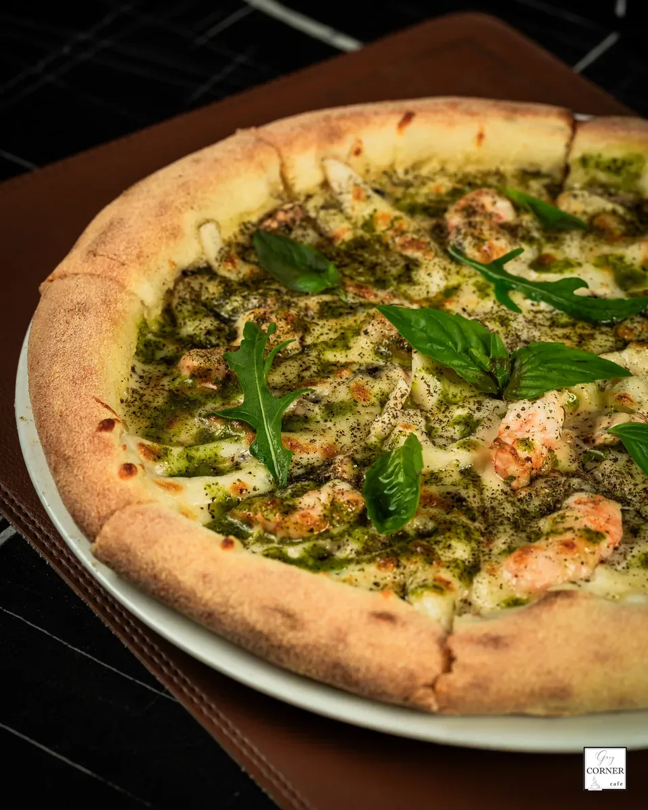
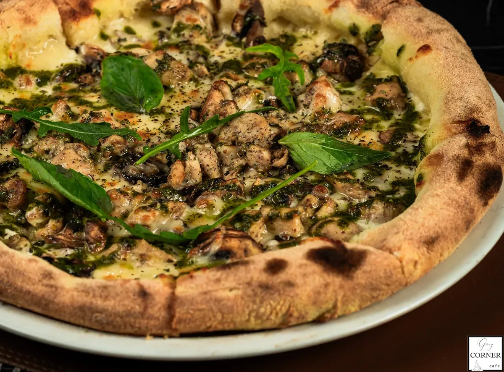

Best-SellerPIZZA FRUITS DE MER
88 MADLa pizza marine star de notre établissement : sauce tomate mijotée, mozzarella fondante, crevettes royales décortiquées, calamars tendres, moules et touche d'origan sauvage séché.
Retrouvez le goût authentique de la pizza italienne cuite à haute température : une pâte légère et aérée, une sauce tomate cuisinée aux herbes aromatiques, de la mozzarella filante et des garnitures nobles (fruits de mer, fromages affinés, viandes sélectionnées).
Des recettes équilibrées, préparées à la commande pour une fraîcheur irréprochable.

Best-SellerLa pizza marine star de notre établissement : sauce tomate mijotée, mozzarella fondante, crevettes royales décortiquées, calamars tendres, moules et touche d'origan sauvage séché.
 Classique Italien
Classique Italien
L'harmonie des quatre saveurs : sauce tomate parfumée, mozzarella, champignons de Paris frais émincés, cœurs d'artichauts, lamelles de dinde fumée et poivrons grillés.
 Pour les Amateurs de Fromage
Pour les Amateurs de Fromage
Une alliance gourmande et onctueuse : mozzarella, gorgonzola au caractère prononcé, parmesan affiné, emmental doux et chèvre crémeux, nappés d'un trait d'huile d'olive.

Crémeuse & FondanteBase crème fraîche onctueuse, morceaux de filet de poulet marinés et dorés, champignons sautés au beurre, mozzarella dorée et origan.
Nos pizzas sont disponibles au déjeuner comme au dîner, sur place dans notre salle climatisée ou en terrasse :